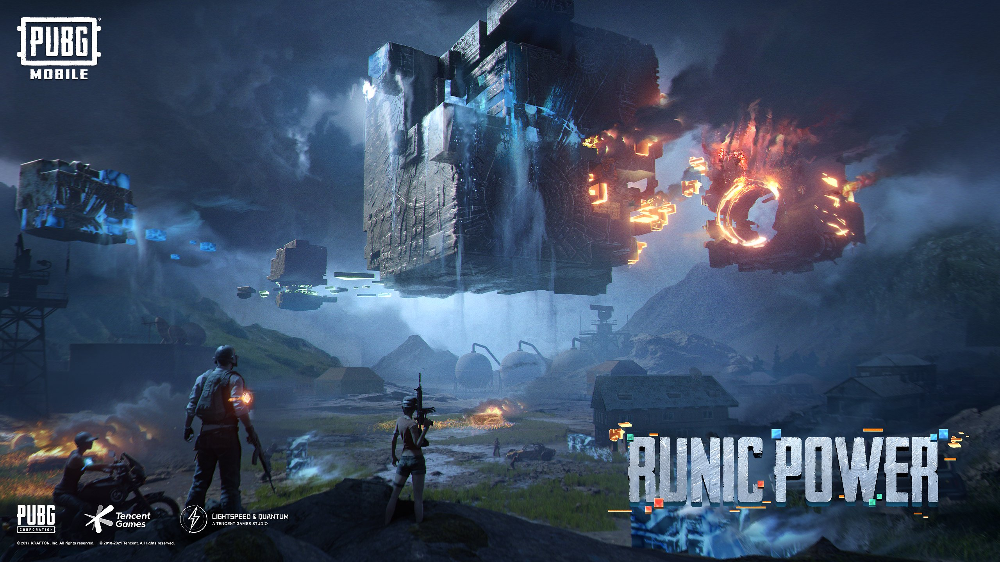

PlayerUnknown’s Battlegrounds (сокр. PUBG, также известна как PUBG: Battlegrounds) — многопользовательская онлайн-игра в жанре королевской битвы, разрабатываемая и издаваемая студией PUBG Corporation, дочерней компанией корейского издателя Bluehole. Официальной дистрибуцией игры на территории России занимается Mail.Ru Group[3][4]. Игра основана на предыдущих модификациях для других игр, созданных Бренданом Грином (англ. Brendan Greene) под псевдонимом «PlayerUnknown», концепция которых была вдохновлена японским фильмом «Королевская битва» 2000 года. В итоге это привело к созданию самостоятельной игры, где Грин выступил в качестве ведущего геймдизайнера. В игре до 100 игроков, которые десантируются на остров, после чего ищут снаряжение и оружие, чтобы убить других участников и при этом самим остаться в живых. Доступная безопасная зона на внутриигровой карте со временем начинает уменьшаться, делая доступное пространство более тесным, чтобы сталкивать игроков между собой. Последний выживший игрок или команда побеждает в раунде. PlayerUnknown’s Battlegrounds была выпущена в Steam по программе раннего доступа 23 марта 2017 года для операционной системы Windows[5]. В течение первых семи месяцев после выхода было продано более 13 млн копий игры, а пиковое количество игроков достигло более 2 миллионов человек к концу года, что сделало её одной из самых популярных игр в Steam[6]. 31 октября продажи PUBG превысили 18 млн копий. Полная версия игры была выпущена 21 декабря 2017 года. Выход для Xbox One под издательством Microsoft Studios состоялся 12 декабря по программе раннего доступа[7], но уже 4 сентября 2018 года состоялся официальный релиз. 19 марта 2018 года была выпущена мобильная версия PUBG Mobile для Android и iOS по модели free-to-play. Версия для PlayStation 4 была анонсирована в ноябре 2018 года, и выпущена 7 декабря 2018 года.